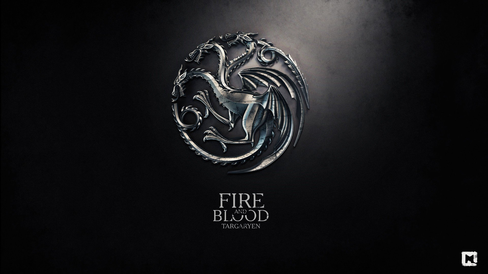
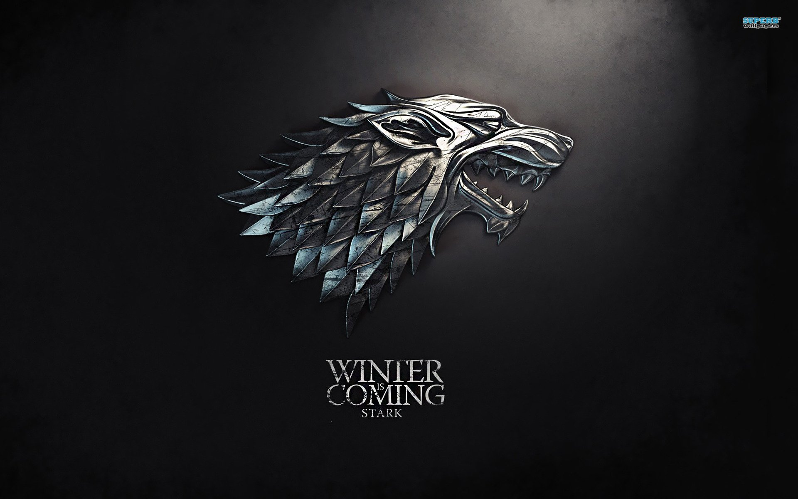
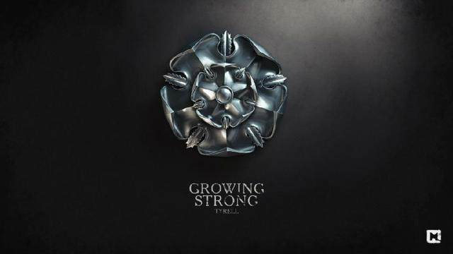
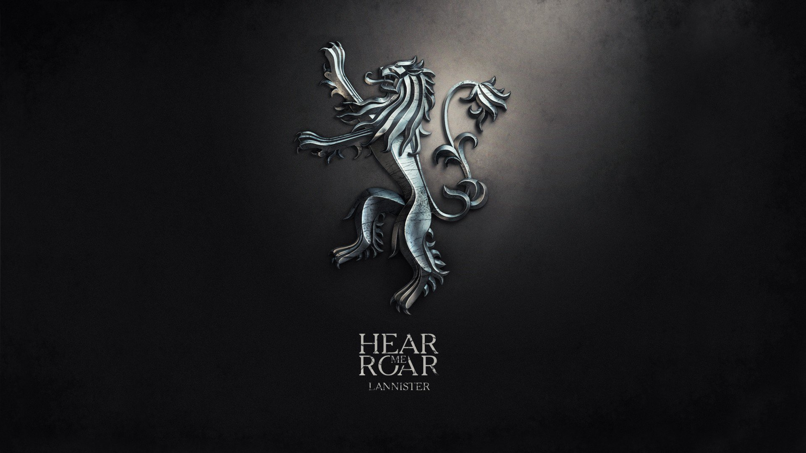
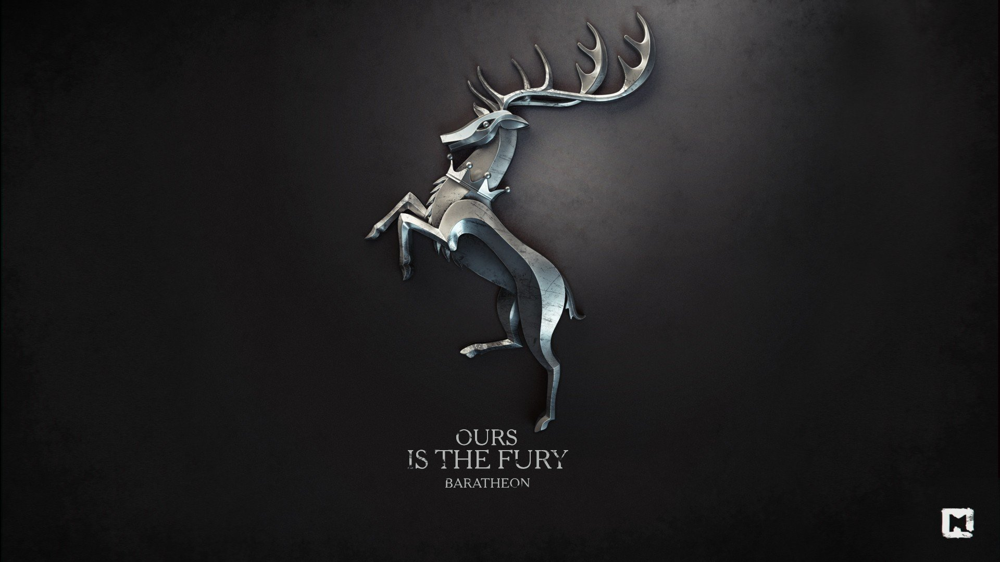
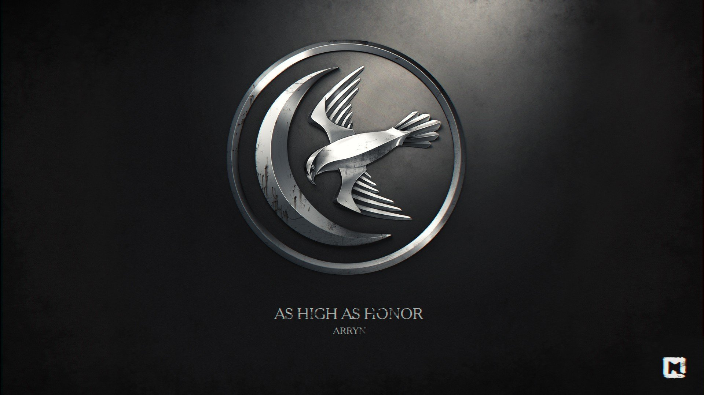
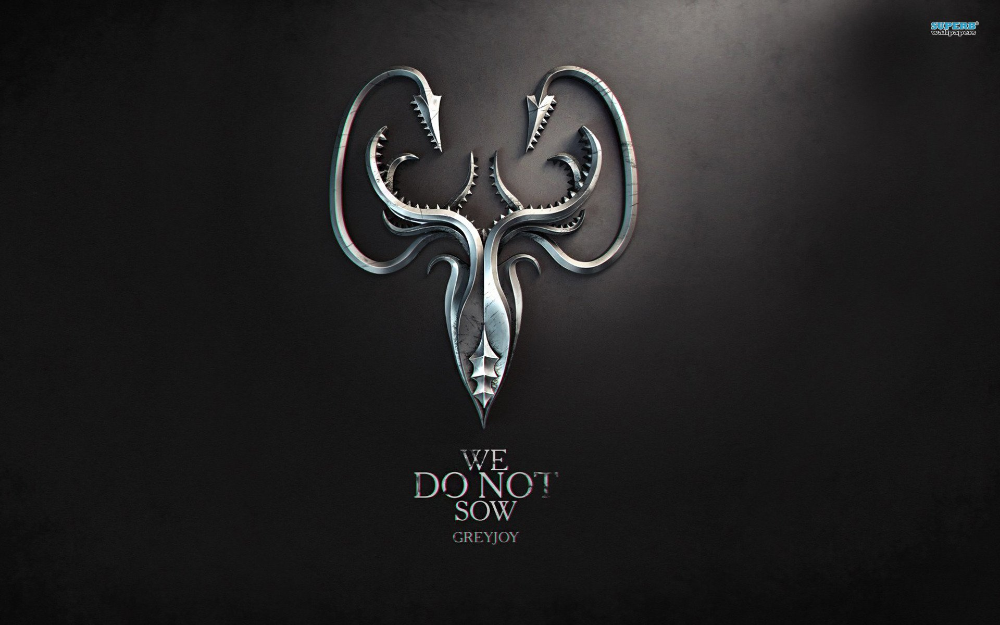
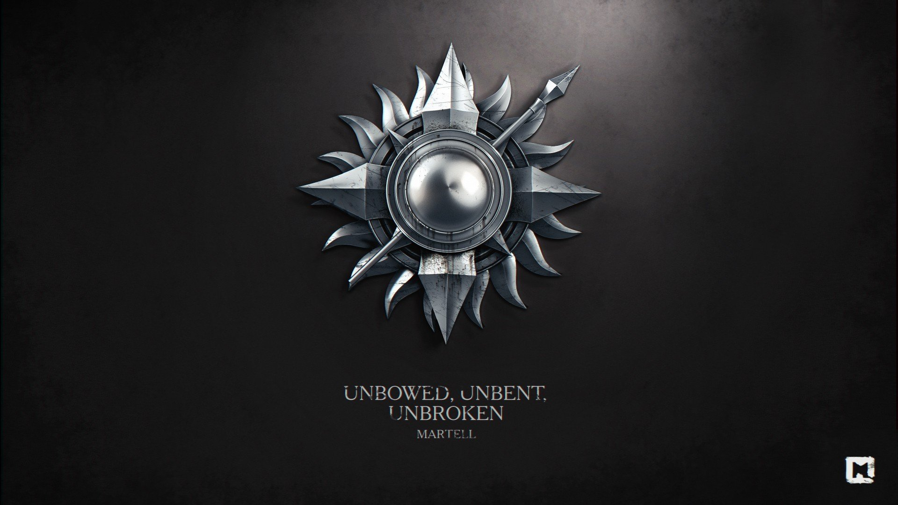
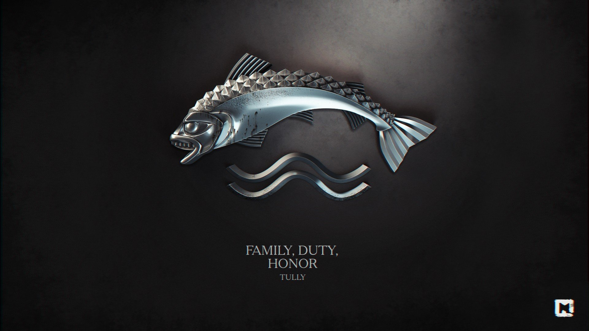

“Valar Morghulis”
Arya Stark
Arya Stark
| Targaryen | Stark | Tyrel |
| Lannister | House Baratheon | Arryn |
| Greyjoy | Martell | Tull |
坦格利安家族是瓦雷利亚自由城邦的一支贵族，在瓦雷利亚末日浩劫来临前逃至维斯特洛。他们定居于龙石岛200多年，直到征服者伊耿与他的两个姐妹维桑尼亚和雷妮丝骑着龙征服了维斯特洛。所以他们的家徽是三头喷火的巨龙，坦格利安家族比其他人更亲近龙。坦格利安家族在铁王座上统治了三百多年，直到“疯王”伊里斯·坦格利安二世（丹妮莉丝的父亲）极其残忍的处死了北境守护瑞卡德·史塔克和他的大儿子布兰登·史塔克，引发了后来的簒夺者战争。坦格利安王朝倒台后幸存的只有丹妮莉丝·坦格利安（疯王与妹妹兼妻子雷拉的女儿，外号“风暴降生”，弥林女王、自封的七国女王。）、二王子韦赛里斯·坦格利安（人称“乞丐王”，在维斯·多斯拉克被卓戈卡奥用一锅热腾腾液态的金王冠杀死）、伊蒙·坦格利安（梅卡的三子，原著里是疯王爷爷的哥哥，电视剧里变成了疯王父亲的哥哥，后来成为守夜人的盲人学士）还有琼恩·雪诺（疯王大儿子雷加·坦格利安与艾德·史塔克妹妹莱安娜·史塔克所生之子，第998任守夜人总司令，在第六季中死而复生成为“北境之王”）。
丹妮莉丝是曾经统治维斯特洛七大王国近三个世纪的坦格利安王朝的末代君王“疯王”伊里斯·坦格利安二世的幼女，从生下来就在流亡，与有家庭暴力倾向的二哥韦赛里斯·坦格利安相依为命。作为坦格利安家族正系最后幸存的成员（坦格利安直系成员还有守夜人伊蒙·坦格利安学士和血鸦布林登·河文，琼恩·雪诺则是雷加·坦格利安和莱安娜·史塔克的儿子，真名即为杰赫里斯·坦格利安，其婚礼由梅纳德主教秘密进行。），她自封的头衔是安达尔人、洛伊拿人和先民的女王（Queen of the Andals, the Rhoynars and the First Men）、七国女王/统治者（Queen/Lord of the Seven Kingdoms）、全境守护（Protector of the Realm）
为了夺回王位，他受潘托斯总督伊利里欧的指使，将唯一的妹妹出卖给多斯拉克的卓戈卡奥，以换取其手下的“10万骑兵”。但骨子里，他对草原民族多斯拉克人极度不屑，视其为野蛮人。后被卓戈卡奥迟迟不向七大王国发兵惹恼，期间发现妹妹亦不再受自己掌握，使之更为气恼。最后在多斯拉克人的圣地舞弄刀枪，并出言威胁。被卓戈卡奥用烧熔的金腰带罩在脸上而死

史塔克家族作为北境守护，是北境最古老最显赫的家族。家族中的一些人天生即为“狼灵”（易形者），可以入侵动物甚至人类的意识。史塔克家族有多支分支，比较著名的有卡史塔克家族和灰史塔克家族，其中灰史塔克家族曾经因为反叛而灭亡，另外在白港及荒冢屯还有一些史塔克家的分支。
艾德·史塔克公爵，临冬城公爵、国王之手、北境守护。被逼承认叛国罪，被乔佛里·拜拉席恩国王下令斩首。夫人是徒利家族的凯特琳·徒利，死于血色婚礼。他们的子女（每个孩子都有一只冰原狼）。
长女珊莎·史塔克，原先与乔佛里订婚，后被其抛弃，转嫁给小恶魔提利昂·兰尼斯特。在剧中又被小指头嫁给小剥皮拉姆斯·波顿，最后成功复仇。冰原狼名为“淑女”。
二儿子布兰登·史塔克，小名“布兰”。因为无意中看到瑟曦和詹姆乱伦从高处被詹姆·兰尼斯特推下变成残废，后来到塞外经过三眼乌鸦的教导成为绿先知。冰原狼名为“夏天”。

幼女艾莉亚·史塔克，柰德曾说其继承了姑姑莱安娜·史塔克一样刚烈的“狼血”（wolf blood）性格。在第六季成为刺客成功刺杀老佛雷，冰原狼名为“娜梅莉亚”。
琼恩·雪诺：名为柰德的私生子，实则是雷加·坦格利安与柰德妹妹莱安娜·史塔克所生之子。冰原狼名为“白灵”。
班扬·史塔克，艾德·史塔克的弟弟，守夜人军团首席游骑兵。在一次塞外搜索中失踪，被认为已死。在第六季第六集班扬再次出现并救走被异鬼追杀的布兰·史塔克。班杨自述自己在寻找威玛·罗伊斯的途中遭遇异鬼，被异鬼用冰剑杀死，后来被森林之子用黑龙匕首插入其心脏救活，并按照"三眼乌鸦"的吩咐来搭救布兰。
高庭的提利尔家族（House Tyrell of Highgarden）统领河湾地，河湾地区富饶肥沃，提利尔家族的富裕程度仅次于兰尼斯特家族，同时他的军事力量也很强，提利尔家族能拥有的的海上军事力量不输于皇家舰队。
梅斯·提利尔（Mace Tyrell）是奇幻小说《冰与火之歌》中的人物。封号颇多，他是高庭公爵、南境守护者、边疆守护者、河湾至高统领。他是一个未老先衰，繁琐而又缺乏政治手腕的人。他唯一的战绩只有风息堡之围。虽然他极力想利用白杨滩之战来引证他的战略才能, 但事实上他在这场战役中根本没有任何贡献，由蓝道·塔利带领的先锋军在他的大军还未到达战场前就已取得了胜利。 他不及其他家庭成员睿智，他虽担任提利尔大家族的领袖，但有名无实。
奥莲娜·雷德温是梅斯·提利尔公爵的母亲，已故高庭公爵罗斯·提利尔的遗孀。她被描绘成一位瘦小但狡猾机敏老妇人，带着尖刻而顽劣的声调，人称荆棘女王。她略显老态，满头银发，个子矮小。她比霍斯特·徒利还老。在权游第七季中，因为高庭被破，被赐毒酒而死，死前吐露了其杀害乔佛里的真相。
兰尼斯特家族是最富有的家族，所以兰尼斯特有一句在七国范围内广泛流传的格言：“兰尼斯特有债必还”。因为兰尼斯特家族所在的西境金矿资源最为丰富，而且从地理位置上来看，维斯特洛三大港口之一的兰尼斯特港也坐落在西境。
泰温·兰尼斯特(Tywin Lannister)，著名奇幻小说《冰与火之歌》中的人物，凯岩城公爵，兰尼斯港之盾和西境守护，是维斯特洛最有权力的领主之一。泰温少年得志，20岁时被任命为御前首相。在篡夺者战争中最后一个加入叛乱军，并夺下君临。五王之战中支持乔佛里国王的事业，南征北战。泰温对亲情，对自己的儿子提利昂几乎是冷血。最后被自己的儿子射杀在厕所里。扮演者查尔斯·丹斯
詹姆·兰尼斯特（Jaime Lannister），著名奇幻小说《冰与火之歌》中的人物，凯岩城领主泰温·兰尼斯特和他的妻子乔安娜夫人的第二个孩子，同时也是他们的长子。詹姆年仅十五岁就加入了疯王伊里斯的御林铁卫，是这支享有极高声誉的传奇性骑士队伍史上最年轻的成员。在篡夺者战争中杀死了伊里斯.坦格利安二世，结束了坦格利安王朝最后一个国王，由此得名“弑君者”。战争结束后，与自己孪生姐姐乱伦生下三个孩子。詹姆性格骄傲、自负。五王之战中被少狼主所俘，后用誓言担保，被凯特琳夫人释放。后又被血戏班所俘，被砍掉用剑的右手。被塔斯之女布蕾尼护送平安返回君临，担任御林铁卫队长。卷四中，被瑟曦派往前去收复河间地，于奔流城营地失踪，下落不明
在前面地图上可以看到王岭(Crowlands)二个字，是铁王座国王的直属领地，包括首都君临（King's Landing）及其周边的一些区域，如暮谷城、黑水湾等。风暴之地（Stormlands)是拜拉席恩家族世袭领地，都城在风息堡 (Storm's End)。劳勃·拜拉席恩当上国王之后，风息堡和风暴之地交给了三弟蓝礼·拜拉席恩，而把二弟史坦尼斯·拜拉席恩派到了鸟不拉屎的龙石岛。
劳勃·拜拉席恩（Robert Baratheon）是乔治·马丁著名长篇史诗奇幻巨作《冰与火之歌》中的人物，曾任风息堡公爵，篡夺者战争胜利后加冕为国王。他的称号有安达尔人、洛伊拿人及“先民”的国王，七国统治者暨全境守护者。
瑟曦·兰尼斯特，出于奇幻小说《冰与火之歌》中的人物。瑟曦是泰温·兰尼斯特公爵和乔安娜·兰尼斯特的长女，詹姆·兰尼斯特的孪生姐姐。故事开始时，瑟曦是劳勃·拜拉席恩的王后，并育有乔佛里·拜拉席恩、弥赛菈·拜拉席恩和托曼·拜拉席恩三个孩子。在篡夺者战争之后她嫁给了新王劳勃·拜拉席恩，成为七大王国的王后。在电视剧版中由于拜拉席恩王朝合法继承人相继死亡，瑟曦成为维斯特洛大陆第一位女王。在电视剧中由琳娜·海蒂（Lena Headey）扮演。在本书第四卷《群鸦的盛宴》中，瑟曦成为了POV人物。 [1]
艾林家族有着最古老悠远的安达尔贵族血统，东境守护琼恩·艾林一直把劳勃·拜拉席恩和艾德·史塔克当作养子视如己出，他率先召集谷地封臣起兵反对疯王的统治，发起簒夺者战争。
琼恩·艾林 公爵（225AL-297AL），是鹰巢城公爵、峡谷守护者和东境守护。在283AL-297AL担任劳勃·拜拉席恩国王的国王之手。他有宽阔的肩膀。
莱莎·徒利源自乔治·马丁长篇史诗奇幻小说《冰与火之歌》中的人物。莱莎·徒利（L - 300AL) 是，霍斯特·徒利与米妮莎·河安之女。在劳勃叛乱期间，她嫁给了琼恩·艾林，一个比她父亲还老的男人
派克城是葛雷乔伊家族的城堡，他们在此统治着铁民。他们的领地铁群岛位于维斯特洛大陆西面，环境严酷，地形峻峭。铁群岛的人自称铁种（Iron Born），他们擅长海战，习惯像海盗一样四处劫掠，他们的族语很明显的说明了这点。

巴隆·葛雷乔伊是美国奇幻小说《冰与火之歌》中的人物，他是葛雷乔伊家族的家主，他的长船名为泓洋巨怪号。在他统治铁群岛的历史上曾经两度发动叛乱，自立为王。他以遵循“古道”为荣（即以强取为上的行事风格），希望领导铁民再现远古时代的辉煌。289AL，他首次从铁王座治下独立发动葛雷乔伊叛乱，但是很快遭到镇压，长子及次子因此丧命，且三子席恩·葛雷乔伊被艾德·史塔克以收义子为由作为人质带回临冬城。五王之战期间，葛雷乔伊家族再度反叛，指挥铁民奇袭北境，短暂的占领了临冬城，不过很快又被北境军镇压告终且其子席恩被拉姆斯·波顿俘虏并折磨，而巴隆本人也最终于伊耿历300AL被其弟攸伦·葛雷乔伊谋杀并篡位
幼子，在葛雷乔伊叛乱后被送去当质子也就是艾德·史塔克的养子，后来被波顿家族俘虏时又名“臭佬”。
剧里多恩出现的比较晚，貌似第四季才出现，而且多恩这条线塑造的不是很理想。阳戟城的纳梅洛斯·马泰尔家族（House Nymeros Martell of Sunspear）是多恩的统治家族。“纳梅洛斯”意为“娜梅莉亚的血脉”。地理位置处于最南边，相对独立，风俗民情不同于其它几个区域。在历史上从未被伊耿征服，而是以联姻的方式加入了七大王国。马泰尔族人的外貌是典型的盐人，带有明显的洛伊拿特征，他们有橄榄色的皮肤，黑眼黑发，不过有些家族成员则有棕土色的头发
多恩亲王、阳戟城领主，他离异的妻子是自由贸易城邦诺佛斯的梅拉莉欧。
幼子，在葛雷乔伊叛乱后被送去当质子也就是艾德·史塔克的养子，后来被波顿家族俘虏时又名“臭佬”。
河间地位于三叉戟河流域的肥沃地带。奔流城的徒利家族（House Tully of the Riverrun）是河间地的首要家族，也是三叉戟河流域的统治者。徒利家族势力不算最大，“小指头”培提尔·贝里席是徒利家族的养子。在篡夺者战争期间，霍斯特·徒利分别把两个女儿嫁给了艾德·史塔克和琼恩·艾林，并加入了叛军
奔流城公爵。他的妻子，河安家族的米妮莎，死于难产。
长女凯特琳·徒利，嫁给艾德·史塔克，死于血色婚礼